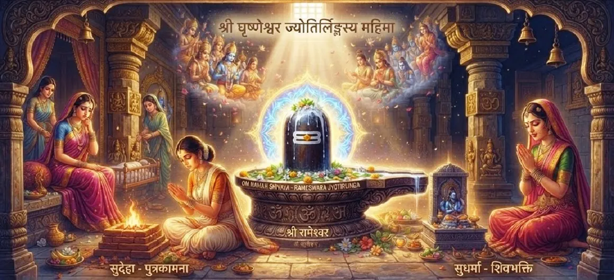

सुधर्मा और सुदेहा की कहानी
कोटिरुद्र संहिता का तैंतीसवाँ अध्याय सुधर्मा और सुदेहा की मार्मिक और शिक्षाप्रद कहानी को उजागर करता है, जो मानव चरित्र और धर्म के परीक्षणों पर प्रकाश डालता है।
अंतरंग नैतिक पाठों के साथ लौकिक भव्यता को जोड़ते हुए, यह अध्याय दर्शाता है कि कैसे सदाचार का पालन और भगवान शिव की भक्ति जटिल कर्म जाल के माध्यम से आत्माओं का मार्गदर्शन करती है।
यह अंतिम ज्योतिर्लिंग के प्रकटीकरण के लिए एक महत्वपूर्ण प्रस्तावना के रूप में कार्य करता है।
अध्याय 33 की मुख्य बातें
नैतिक कथा
सुधर्मा और सुदेहा की गूढ़ कथा
चरित्र परीक्षण
पारिवारिक कर्तव्य, ईर्ष्या और प्रलोभन से मुक्ति।
कर्म परीक्षण
कारण और प्रभाव के कठोर नियमों को समझना।
धर्म
भावनात्मक संघर्ष के बीच सत्य और सदाचार को कायम रखना।
ईश्वरीय कृपा
मानव नियति में महादेव का हस्तक्षेप।
ज्योतिर्लिंग की प्रस्तावना
घुश्मेश्वर की उत्पत्ति के लिए मंच तैयार करना।
इस अध्याय में मुख्य विषय
- 01सुधर्मा और सुदेहा की पृष्ठभूमि→
- 02गुण, इच्छाएँ और भावनात्मक परीक्षण→
- 03आस्था और धार्मिक आचरण की परीक्षा→
- 04मोह और लोभ के परिणाम→
- 05शिव भक्ति की मोक्षदायक शक्ति→
- 06दैवीय हस्तक्षेप और करुणा→
- 07मानवता के लिए मूल नैतिक पाठ→
- 08दुख और भौतिक भ्रम से परे→
- 09घुश्मेश्वर के लिए मंच तैयार करना→
- 10अध्याय 34 की ओर →
सुधर्मा और सुदेहा की पृष्ठभूमि
अध्याय सुधर्मा और सुदेहा का परिचय देता है, उनके जीवन, सामाजिक स्थिति और जटिल भावनात्मक गतिशीलता को चित्रित करता है जो उनके साझा अस्तित्व को आकार देते हैं।
उनकी कहानी मानवीय कमजोरियों और गुणों को प्रतिबिंबित करने वाले दर्पण के रूप में कार्य करती है।
गुण, इच्छाएँ और भावनात्मक परीक्षण
जैसे-जैसे कहानी सामने आती है, दोनों पात्रों को अधूरी अपेक्षाओं, सामाजिक दबाव और आंतरिक इच्छाओं से उत्पन्न गंभीर भावनात्मक परीक्षणों का सामना करना पड़ता है।
आसक्ति स्पष्ट निर्णय को धूमिल करने लगती है।
आस्था और धार्मिक आचरण की परीक्षा
परीक्षणों के बीच, कथा नाराजगी या कड़वाहट के आगे झुकने के बजाय धर्म (धर्म) को मजबूती से पकड़ने के महत्वपूर्ण महत्व पर जोर देती है।
विश्वास विपत्ति की भट्टी में निर्मित होता है।
मोह और लोभ के परिणाम
पाठ दर्शाता है कि किस प्रकार ईर्ष्या और स्वामित्व जैसी नकारात्मक भावनाओं के आगे झुकना अनिवार्य रूप से दुख उत्पन्न करता है, जो आत्मा को सांसारिक भ्रम में जकड़ देता है।
कार्मिक नियम किसी को भी अपने प्रभाव से नहीं बचाते।
शिव भक्ति की मोक्षदायक शक्ति
गहरे क्लेश के बावजूद भी, पश्चाताप और सच्चे दिल से भगवान शिव की ओर मुड़ना परम शरण और सांत्वना प्रदान करता है।
शिव की कृपा दुःख को आध्यात्मिक जागृति में बदल देती है।
दैवीय हस्तक्षेप और करुणा
भगवान शिव, अपने भक्तों के प्रति हमेशा दयालु रहते हैं, उलझी हुई आत्माओं को सत्य, मुक्ति और अंततः पीड़ा से मुक्ति की ओर मार्गदर्शन करने के लिए हस्तक्षेप करते हैं।
मानवीय भूल जो नष्ट कर देती है, ईश्वरीय दया उसे सुधार देती है।
मानवता के लिए मूल नैतिक पाठ
यह कहानी क्षमा, बेलगाम इच्छाओं के खतरे, धैर्य के महत्व और नैतिक अखंडता की सर्वोच्चता पर शाश्वत शिक्षा देती है।
धार्मिक कार्य आध्यात्मिक शांति की नींव है।
दुख और भौतिक भ्रम से परे
कथा के समाधान के माध्यम से, पाठक अस्थायी सांसारिक नुकसानों से परे देखना और महादेव द्वारा शासित शाश्वत आध्यात्मिक वास्तविकता को पहचानना सीखते हैं।
बुद्धि दुःख के अंधकार को दूर कर देती है।
घुश्मेश्वर के लिए मंच तैयार करना
यह नैतिक और कर्म संबंधी कथा सीधे तौर पर उन चमत्कारी घटनाओं के लिए मंच तैयार करती है जो बारहवें ज्योतिर्लिंग घुश्मेश्वर के प्रकट होने की ओर ले जाती हैं।
प्रत्येक परीक्षण आत्मा को परम अनुग्रह के लिए तैयार करता है।
अध्याय 34 की ओर
सुधर्मा और सुदेहा के नैतिक पाठों की खोज करने के बाद, घुश्मेश्वर ज्योतिर्लिंग की चमत्कारिक उत्पत्ति को प्रकट करने के लिए कथा अध्याय 34 में बदल जाती है।
पाठकों को अध्याय 34 को जारी रखने के लिए आमंत्रित किया जाता है।
अध्याय 33 की मुख्य शिक्षाएँ
सदाचारी कर्तव्य
जीवन की जटिल परीक्षाओं के माध्यम से धर्म को कायम रखना।
लालच पर काबू पाना
ईर्ष्या और स्वामित्व का विरोध करने से आंतरिक शांति बनी रहती है।
कर्म न्याय
कार्य अपरिहार्य परिणाम उत्पन्न करते हैं जो चरित्र का परीक्षण करते हैं।
ईश्वरीय दया
शिव की कृपा ईमानदार आत्माओं को गहरी पीड़ा से मुक्ति दिलाती है।
क्षमा
नाराजगी दूर करने से भावनात्मक और आध्यात्मिक घाव ठीक हो जाते हैं।
आध्यात्मिक जागृति
परीक्षण दिव्य प्राप्ति की ओर मार्ग प्रशस्त करते हैं।
आध्यात्मिक चिंतन
कोटिरुद्र संहिता में सुधर्मा और सुदेहा की कहानी प्रत्येक आध्यात्मिक साधक के लिए एक गहन मनोवैज्ञानिक और नैतिक दर्पण के रूप में कार्य करती है। यह दर्शाता है कि कैसे अपरीक्षित इच्छाएं, लगाव और अहंकार मानवीय रिश्तों को दर्दनाक परीक्षणों में ले जा सकते हैं। फिर भी, अंतर्निहित संदेश अत्यधिक आशाओं में से एक है: चाहे आत्मा कर्म जाल में कितनी भी उलझी हो, ईमानदारी से भगवान शिव की ओर मुड़ने से दिव्य दया का आह्वान होता है। यह कथा हमें याद दिलाती है कि जीवन की कठिनाइयाँ केवल सज़ा नहीं हैं, बल्कि अशुद्धियाँ दूर करने, क्षमा सीखने और हमारी चेतना को सर्वोच्च कृपा में स्थापित करने के पवित्र अवसर हैं।
अध्याय 33 का संदेश जीना
धैर्य, क्षमा और नैतिक सत्यनिष्ठा के पालन के साथ व्यक्तिगत संघर्षों और भावनात्मक चुनौतियों से निपटें।
पहचानें कि ईर्ष्या और लालच केवल दुख को आमंत्रित करते हैं, जबकि अपने बोझ को भगवान शिव को समर्पित करने से सच्ची आंतरिक मुक्ति मिलती है।
प्रत्येक परीक्षण को अपनी भक्ति में एक सीढ़ी बनने दें।
प्रमुख आध्यात्मिक अवधारणाएँ
जटिल भावनात्मक परीक्षणों के माध्यम से धर्म को कायम रखना।
बेलगाम इच्छा और अधिकारिता से उत्पन्न पीड़ा।
शिव की असीम करुणा सच्ची आत्माओं को बचाती है।
आध्यात्मिक समर्पण के माध्यम से भावनात्मक घावों को ठीक करना।
जीवन की परीक्षाओं को आध्यात्मिक विकास के अवसर के रूप में देखना।
अंतिम तीर्थस्थल की उत्पत्ति की ओर ले जाने वाली कथात्मक पृष्ठभूमि।
अध्याय सारांश
कोटिरुद्र संहिता अध्याय 33 में सुधर्मा और सुदेहा की शिक्षाप्रद कहानी प्रस्तुत की गई है, जो मानव जीवन की नैतिक जटिलताओं, लगाव के खतरों और शिव भक्ति की मुक्ति शक्ति पर प्रकाश डालती है। कर्म परीक्षणों और दैवीय दया के माध्यम से पाठकों का मार्गदर्शन करके, अध्याय 34 में घुश्मेश्वर ज्योतिर्लिंग की चमत्कारी अभिव्यक्ति के लिए जमीन तैयार करता है।
अक्सर पूछे जाने वाले प्रश्न
1. कोटिरुद्र संहिता अध्याय 33 का केंद्रीय विषय क्या है?
अध्याय 33 में सुधर्मा और सुदेहा की प्रेरक कहानी बताई गई है, जो नैतिक कर्तव्य, धर्म और भगवान शिव की भक्ति की परिवर्तनकारी शक्ति पर प्रकाश डालती है।
2. अध्याय 33 पिछले अध्याय से कैसे जुड़ता है?
रामेश्वर की दिव्य महिमा का अनुसरण करते हुए, अध्याय 33 मानव नैतिक आचरण और कर्म परीक्षणों पर ध्यान केंद्रित करता है जो घुश्मेश्वर ज्योतिर्लिंग के प्रकट होने का मार्ग प्रशस्त करता है।
3. सुधर्मा और सुदेहा कौन हैं?
सुधर्मा और सुदेहा ऐसे पात्र हैं जो पवित्र कथा में सदाचार, पारिवारिक परीक्षण और आध्यात्मिक दृढ़ता के विपरीत पथों का प्रतीक हैं।
4. इस अध्याय से प्राथमिक पाठ क्या हैं?
पाठों में धर्म को बनाए रखना, ईर्ष्या और लालच पर काबू पाना, क्षमा का अभ्यास करना और भगवान शिव की कृपा के अंतिम न्याय पर भरोसा करना शामिल है।
5. इस अध्याय में कौन सी कथा वर्णित है?
कथा अध्याय 34, 'घुश्मेश्वर ज्योतिर्लिंग की उत्पत्ति' में परिवर्तित होती है।
6. कहानी कर्मगत समाधान कैसे करती है?
परीक्षणों और दैवीय हस्तक्षेप के माध्यम से, कथा इस तरह से हल होती है जो महादेव की सर्वोच्च दया को रेखांकित करती है और सीधे अंतिम ज्योतिर्लिंग की अभिव्यक्ति की ओर ले जाती है।
"नैतिक सत्यनिष्ठा, क्षमा और शिव की शरण के माध्यम से, सभी कर्म परीक्षण दूर हो जाते हैं और आत्मा को दिव्य कृपा प्राप्त होती है।"
कोटिरुद्र संहिता के माध्यम से जारी रखें
अध्याय 33 सुधर्मा और सुदेहा की कहानी की पड़ताल करता है। अध्याय 34, घुश्मेश्वर ज्योतिर्लिंग की उत्पत्ति को जारी रखें।